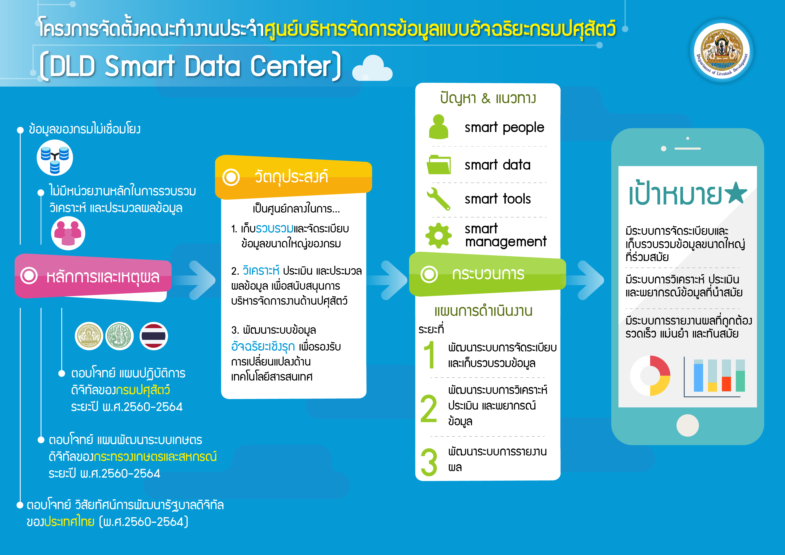

หลักการและเหตุผล
กรมปศุสัตว์ได้นำเทคโนโลยีสารสนเทศมาใช้เพื่อขับเคลื่อนยุทธศาสตร์ตามแผนงาน โครงการ กิจกรรมต่างๆ โดยจัดเก็บในรูปแบบของฐานข้อมูล (Database) หรือฐานข้อมูลออนไลน์ (Web Base) และฐานข้อมูลต่างๆ ดังกล่าว มีความหลากหลาย มีการใช้งานเฉพาะเพื่อการดำเนินงานของแต่ละหน่วยงาน และยังไม่มีการเชื่อมโยงข้อมูลระหว่างหน่วยงาน รวมทั้ง ยังไม่มีหน่วยงานที่รับผิดชอบหลักในการรวบรวม วิเคราะห์และประมวลผลข้อมูลต่างๆ ในภาพรวมของกรมปศุสัตว์ ทำให้ขาดความรวดเร็วและต่อเนื่องในการวิเคราะห์ข้อมูล เพื่อสนับสนุนการตัดสินใจของผู้บริหาร ดังนั้น เพื่อให้ตอบโจทย์ 1) วิสัยทัศน์การพัฒนารัฐบาลดิจิทัลของประเทศไทย (พ.ศ.2560-2564) ในหัวข้อการดำเนินงานแบบอัจฉริยะ (Smart Operation) ที่ให้นำเทคโนโลยีและอุปกรณ์ดิจิทัลมาสนับสนุนการปฏิบัติงานของเจ้าหน้าที่ภาครัฐไทย เพื่อให้สามารถดำเนินงานอย่างถูกต้อง แม่นยำ รวดเร็ว ตรงจุดมากขึ้น 2) แผนพัฒนาระบบเกษตรดิจิทัลของกระทรวงเกษตรและสหกรณ์ ระยะปี พ.ศ.2560-2564 ในยุทธศาสตร์ที่ 5 การเปลี่ยนถ่ายการบริหารจัดการสู่องค์กรดิจิทัลที่พร้อมสำหรับการทำระบบเกษตรดิจิทัล (Digital Transform) ให้มีการนำเทคโนโลยีดิจิทัลมาปรับปรุงประสิทธิภาพการบริหารจัดการของหน่วยงานทั้งในส่วนกลางและส่วนภูมิภาค 3) แผนปฏิบัติการดิจิทัลของกรมปศุสัตว์ ระยะ 5 ปี พ.ศ.2560-2564 ภายใต้ยุทธศาสตร์การพัฒนาเทคโนโลยีดิจิทัลของกรมปศุสัตว์ ได้แก่ ระบบเทคโนโลยีดิจิทัลภาคการปศุสัตว์ที่เป็นระบบและมีเอกภาพ โดยการบูรณาการข้อมูลร่วมกันทั้งภายในและภายนอก พร้อมกับมีระบบเฝ้าระวัง ป้องกันและระบบเตือนภัยที่มีประสิทธิภาพและแม่นยำ (Smart Livestock) ซึ่งเทคโนโลยีสารสนเทศและการวิเคราะห์ประมวลผลในยุคปัจจุบัน สามารถช่วยในการบริหารจัดการข้อมูลจากแหล่งต่างๆ โดยผู้วิเคราะห์สามารถค้นหาความรู้ในฐานข้อมูล เพื่อประมวลผลและนำไปใช้สนับสนุนการตัดสินใจของผู้บริหาร ดังนั้น จึงจำเป็นอย่างยิ่งที่จะต้องมีคณะทำงาน พัฒนาระบบโดยนำเทคโนโลยีดิจิทัลมาปรับปรุงประสิทธิภาพการบริหารจัดการข้อมูล การรวบรวม วิเคราะห์และประมวลผลข้อมูล เพื่อตอบสนองวิสัยทัศน์การพัฒนารัฐบาลดิจิทัลของประเทศไทย สอดคล้องกับแผนพัฒนาระบบเกษตรดิจิทัลของกระทรวงเกษตรและสหกรณ์ และแผนปฏิบัติการดิจิทัลของกรมปศุสัตว์ (DLD 4.0)